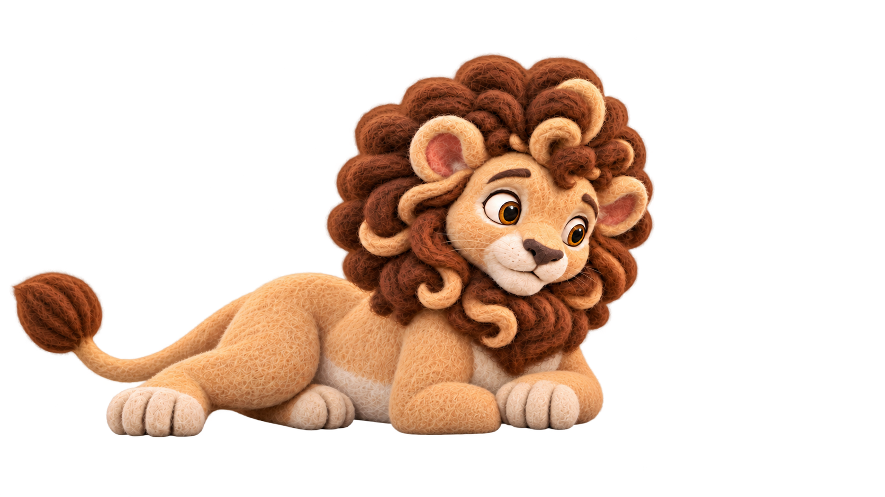
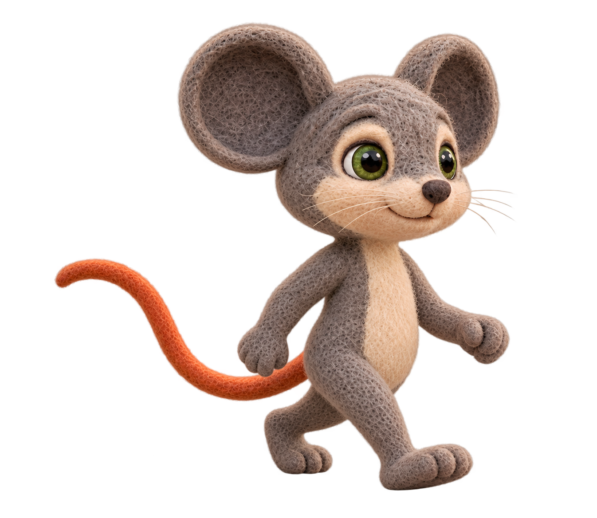
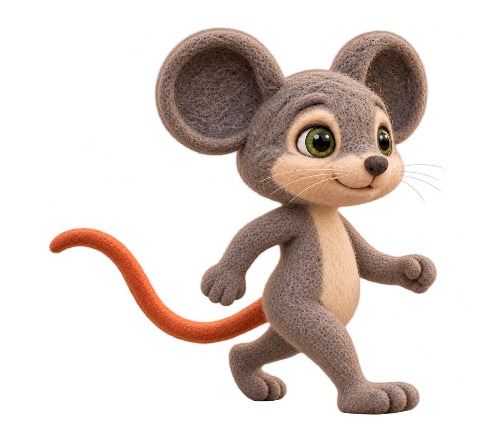
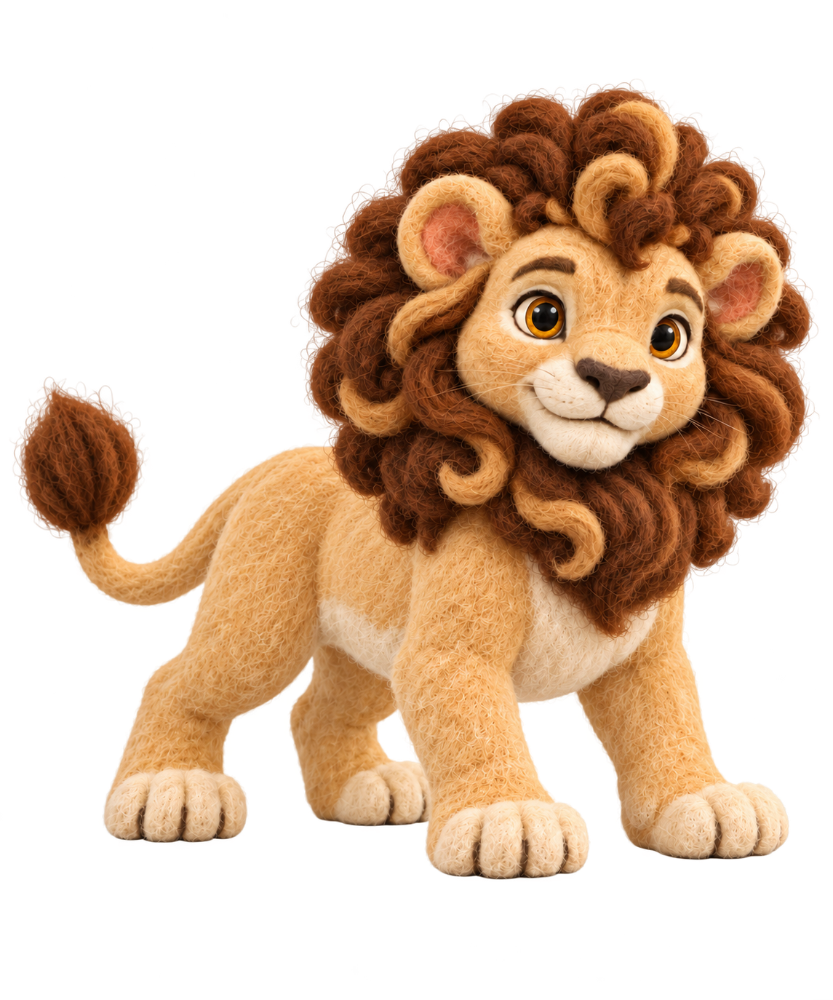

44 selected scene images · 45 scene uses including L006 reuse. S01: 10 · S02: 6 · S03: 10 · S04: 5 · S05: 13.
Clean current selection: superseded candidates are excluded. Existing technical notes remain. These are the images selected so far, not complete audio-aligned video coverage.
These are missing authored scene endpoints, not failed selections. No missing media or motion approval is inferred.
S01-L001-B01-I01 · Action start
S01-L002-B03-I01 · Action start
S01-L003-B01-I01 · Action start
S01-L004-B03-I01 · Action start
S01-L004-B03-I02 · Readable action key 1
S01-L004-B03-I04 · Future eating-action endpoint: acorn tasted, same local setup/body/prop size as I03; visible consumed area begins here. Planned only, no media yet.
S02-L004-B02-I01 · Reuse the standing hold endpoint exactly, without cut or re-created actor/background. Start one continuous crouch/lower/contact/release action.
S03-L001-B01-I01 · Start composition: Milo pauses at the fork with the distant homeward route visible
S03-L002-B01-I01 · Start composition: Establish the fork and its two distinct routes without changing their topology
S03-L003-B01-I01 · Start composition: Emphasize the familiar safe long path curving left around the sunny meadow
S03-L004-B01-I01 · Start composition: Cut to the shorter right-hand shortcut as a separate route emphasis
S03-L005-B01-I01 · Start composition: The shortcut leads through quiet unfamiliar trunks; preserve its right-route identity
S03-L006-B01-I01 · Action start
S03-L007-B01-I01 · Action start
S03-L008-B01-I01 · Action start
S04-L001-B01-I02 · Action end
S04-L002-B01-I02 · Action end
S04-L003-B01-I02 · Action end
S04-L004-B01-I02 · Action end
S04-L005-B01-I02 · Action end
S05-L008-B01-I01 · Approach before catching rear paw; grounded support
S05-L008-B01-I03 · Forward pitch and counterbalancing arms; foot remains at obstacle
S05-L009-B01-I04 · Action end
S05-L010-B01-I01 · Action start
34 selected reusable performance assets; 21 current unapproved performance candidates retained separately for unfinished work. Historical sources needed for receipts are stored in the provenance archive.
S09–S11 · poses and narration
Reuse homeward Milo walking and standing references. Five new requests prepared: two careful Milo steps, two curious Leo steps, one grounded connected-net anchor. Cost unknown, no retries; no paid submissions yet. Review net topology before falling/tug/trapped-portrait/call variants. Leo remains grounded; curiosity, concern and frustration replace the old encouraging-face placeholders.
New local extraction candidate · pending owner review

S09-L006 / S09-L007. Native Leo pixels retained; separate Milo removed across near-transparent gap. No paid call or body redraw; no approval transfer from source scene.
milo.walk.careful.3q:contact
Planned pose · source reference shown, not new output

S09-L002-B01-I01, S09-L003-B01-I01
Exact proposed prompt
Create ONE reusable transparent Milo performance candidate. A careful homeward walking contact: three-quarter view toward screen-right, small deliberate step, near foot supporting in front, far foot trailing, naturally counter-swinging arms. Gaze angled down at the ground route ahead without changing skull anatomy. Soft relieved concentration, small closed-mouth smile, no hurry/panic. Continuous hip–thigh–knee–ankle construction, grey paws. This is a genuinely careful walk, not standing or tripping. Each character keeps its own canonical anatomy: preserve skull/muzzle, eye size/spacing, ears/neck, lean torso, orange tail and cream patch, limb/paw widths and intrinsic felt colors. Use the attached canonical and that character’s own visible measurement guide; never apply Milo ratios to Leo or draw annotation marks. Milo upright comparable-view projected head fraction is 0.39 +/-0.01; bent or foreshortened measurements need separate comparison, not fabricated precision. No independent head/body/limb resizing. Full character and tail with generous margins, closed toothless mouth, natural soft neutral illumination, genuine transparent alpha. No scene, ground plane, cast shadow, text, icons or watermark. One output only. New pose, net design/contact and numerical anatomy remain subject to owner review.
milo.walk.careful.3q:opposite_contact
Planned pose · source reference shown, not new output

S09-L003-B01-I02
Exact proposed prompt
Create ONE reusable transparent Milo performance candidate. The distinct opposite-foot contact of a careful homeward walk in three-quarter screen-right view. Far leg now steps forward and near leg trails, with anatomically continuous hip/thigh/knee/ankle and corresponding opposite arm swing. Downward attention to the route, gentle relieved concentration and closed mouth. Keep same head/body/ear/cream-patch widths and lean design as the reference; do not duplicate the reference leg arrangement. Each character keeps its own canonical anatomy: preserve skull/muzzle, eye size/spacing, ears/neck, lean torso, orange tail and cream patch, limb/paw widths and intrinsic felt colors. Use the attached canonical and that character’s own visible measurement guide; never apply Milo ratios to Leo or draw annotation marks. Milo upright comparable-view projected head fraction is 0.39 +/-0.01; bent or foreshortened measurements need separate comparison, not fabricated precision. No independent head/body/limb resizing. Full character and tail with generous margins, closed toothless mouth, natural soft neutral illumination, genuine transparent alpha. No scene, ground plane, cast shadow, text, icons or watermark. One output only. New pose, net design/contact and numerical anatomy remain subject to owner review.
leo.walk.notice.3q:contact
Planned pose · source reference shown, not new output

S10-L001-B01-I01, S10-L002-B01-I01
Exact proposed prompt
Create ONE reusable transparent Leo performance candidate. Leo walking quadruped in three-quarter screen-right view; a natural contact step with one front paw reaching forward and planted, diagonally coordinated hind support, other paws naturally spaced. Head angled only slightly downward to notice something among leaves ahead. Quiet curiosity, attentive brows, closed mouth, no encouraging grin or exaggerated surprise. Keep four anatomically continuous limbs and rounded clawless paws. No leaves/trigger/props in this body reference. Each character keeps its own canonical anatomy: preserve skull/muzzle, eye size/spacing, ears/mane curls and trunk, limb/paw widths and intrinsic felt colors. Use the attached canonical and that character’s own visible measurement guide; never apply Milo ratios to Leo or draw annotation marks. Milo upright comparable-view projected head fraction is 0.39 +/-0.01; bent or foreshortened measurements need separate comparison, not fabricated precision. No independent head/body/limb resizing. Full character and tail with generous margins, closed toothless mouth, natural soft neutral illumination, genuine transparent alpha. No scene, ground plane, cast shadow, text, icons or watermark. One output only. New pose, net design/contact and numerical anatomy remain subject to owner review.
leo.walk.notice.3q:passing_step
Planned pose · source reference shown, not new output
S10-L001-B01-I02, S10-L002-B01-I02
Exact proposed prompt
Create ONE reusable transparent Leo performance candidate. A distinct quadruped passing step of the same screen-right curious walk: supporting front leg beneath shoulder, opposite front paw lifting/passing forward, hind legs in coherent diagonal gait phase. Keep four connected limbs, mane/head/trunk/tail and rounded clawless paw design. Gaze gently downward toward something ahead among leaves, quiet curiosity, closed mouth. No actual leaves/trigger/props in the transparent pose. Each character keeps its own canonical anatomy: preserve skull/muzzle, eye size/spacing, ears/mane curls and trunk, limb/paw widths and intrinsic felt colors. Use the attached canonical and that character’s own visible measurement guide; never apply Milo ratios to Leo or draw annotation marks. Milo upright comparable-view projected head fraction is 0.39 +/-0.01; bent or foreshortened measurements need separate comparison, not fabricated precision. No independent head/body/limb resizing. Full character and tail with generous margins, closed toothless mouth, natural soft neutral illumination, genuine transparent alpha. No scene, ground plane, cast shadow, text, icons or watermark. One output only. New pose, net design/contact and numerical anatomy remain subject to owner review.
leo.net.grounded.3q:default
Planned pose · source reference shown, not new output
S10-L004-B01-I02, S11-L006-B01-I01
Exact proposed prompt
Create ONE reusable transparent Leo performance candidate. First settled-net construction anchor. Leo remains grounded in a three-quarter screen-right quadruped stance with ALL FOUR paws safely planted at the same support plane, body slightly braced, no hanging, rolling or full collapse. A single soft natural tan rope net drapes over crown/outer mane, shoulders, trunk and flanks, with one consistent diamond mesh and clearly connected rounded knots. Leave a stable generous opening so both eyes, nose and muzzle remain clear. The net is neither a neck noose nor a sack. No tight neck loop, injury, teeth or claws. Border/corner ropes come down to four identifiable grounded corner ends around the stance; no floating loose disconnected strands. All ropes intact, no torn mesh or breaking. Leo shows alert concern and puzzlement at being caught, not a cheerful grin or comic panic. This image proposes the net-on-body topology for later review; future tug/portrait/call variants must reuse its mesh, knot positions and facial opening, allowing only physically caused deformation. Do not add trees, overhead branches, floor or background; retain genuine transparency between mesh cells. Each character keeps its own canonical anatomy: preserve skull/muzzle, eye size/spacing, ears/mane curls and trunk, limb/paw widths and intrinsic felt colors. Use the attached canonical and that character’s own visible measurement guide; never apply Milo ratios to Leo or draw annotation marks. Milo upright comparable-view projected head fraction is 0.39 +/-0.01; bent or foreshortened measurements need separate comparison, not fabricated precision. No independent head/body/limb resizing. Full character and tail with generous margins, closed toothless mouth, natural soft neutral illumination, genuine transparent alpha. No scene, ground plane, cast shadow, text, icons or watermark. One output only. New pose, net design/contact and numerical anatomy remain subject to owner review.
S09–S11 actual narration
S09-L001 · The mouse smiled and hurried home.
S09-L002 · But this time...
S09-L003 · a little more carefully.
S09-L004 · Days passed.
S09-L005 · The mouse returned to the usual routines of the forest.
S09-L006 · And the lion returned to his favorite shady tree.
S09-L007 · Neither of them expected that their paths would cross again so soon.
S10-L001 · Then, one morning, something small beneath the leaves caught the lion's eye as he walked through a distant part of the forest.
S10-L002 · He stepped closer.
S10-L003 · His paw pressed a hidden trigger, and a soft rope net dropped from the branches above.
S10-L004 · The net settled over him, leaving his paws safely on the ground.
S11-L001 · He tried one careful tug.
S11-L002 · But the knotted ropes held firm.
S11-L003 · No...
S11-L004 · Come on!
S11-L005 · Why won't this break?
S11-L006 · The lion was powerful.
S11-L007 · But strength alone could not free him.
S11-L008 · At last, he let out a deep call for help.
S11-L009 · It echoed through the forest.
S08 · 24 narration lines / 7 unique scene depictions
Line-specific acting choices reuse suitable expressions rather than generic surprise. Close-up families retain head/neck/chest geometry. Shared shots use one S06 protected background/camera. Identical L001/L010/L024 boundaries are holds or offscreen changes, not distinct visible action endpoints. All seven scene depictions and their recorded uses are owner-selected at exact hashes. Raw performance approval, numerical anatomy and video readiness remain separate.
restrained_blocked · Primary scene raster; related lines may reuse this depiction.
Source and limits
Narration-specific acting on fixed background/crop; new performance and scene pending owner review. Shared-raster uses are holds/offscreen actions, not distinct visible motion endpoints. Anatomy, light and grounding need review.
Owner-selected scene depiction · technical notes retained
The lion looked down.
restrained_blocked · Same scene pixels as S08-L001-B01-I01; deliberate hold/offscreen action.
Source and limits
Narration-specific acting on fixed background/crop; new performance and scene pending owner review. Shared-raster uses are holds/offscreen actions, not distinct visible motion endpoints. Anatomy, light and grounding need review.
Owner-selected scene depiction · technical notes retained
The mouse was trembling.
restrained_blocked · Same scene pixels as S08-L001-B01-I01; deliberate hold/offscreen action.
Source and limits
Narration-specific acting on fixed background/crop; new performance and scene pending owner review. Shared-raster uses are holds/offscreen actions, not distinct visible motion endpoints. Anatomy, light and grounding need review.
Owner-selected scene depiction · technical notes retained
He could easily have frightened the little creature even more.
restrained_blocked · Same scene pixels as S08-L001-B01-I01; deliberate hold/offscreen action.
Source and limits
Narration-specific acting on fixed background/crop; new performance and scene pending owner review. Shared-raster uses are holds/offscreen actions, not distinct visible motion endpoints. Anatomy, light and grounding need review.
Owner-selected scene depiction · technical notes retained
He could have become angry.
restrained_blocked · Same scene pixels as S08-L001-B01-I01; deliberate hold/offscreen action.
Source and limits
Narration-specific acting on fixed background/crop; new performance and scene pending owner review. Shared-raster uses are holds/offscreen actions, not distinct visible motion endpoints. Anatomy, light and grounding need review.
Owner-selected scene depiction · technical notes retained
After all, he was the strongest animal for miles around.
restrained_blocked · Same scene pixels as S08-L001-B01-I01; deliberate hold/offscreen action.
Source and limits
Narration-specific acting on fixed background/crop; new performance and scene pending owner review. Shared-raster uses are holds/offscreen actions, not distinct visible motion endpoints. Anatomy, light and grounding need review.
Owner-selected scene depiction · technical notes retained
But being able to frighten someone did not mean that he had to.
restrained_blocked · Same scene pixels as S08-L001-B01-I01; deliberate hold/offscreen action.
Source and limits
Narration-specific acting on fixed background/crop; new performance and scene pending owner review. Shared-raster uses are holds/offscreen actions, not distinct visible motion endpoints. Anatomy, light and grounding need review.
thoughtful · Primary scene raster; related lines may reuse this depiction.
Source and limits
Narration-specific acting on fixed background/crop; new performance and scene pending owner review. Shared-raster uses are holds/offscreen actions, not distinct visible motion endpoints. Anatomy, light and grounding need review.
Owner-selected scene depiction · technical notes retained
The lion's expression softened.
softened · Primary scene raster; related lines may reuse this depiction.
Source and limits
Narration-specific acting on fixed background/crop; new performance and scene pending owner review. Shared-raster uses are holds/offscreen actions, not distinct visible motion endpoints. Anatomy, light and grounding need review.
Owner-selected scene depiction · technical notes retained
Well...
softened · Same scene pixels as S08-L007-B01-I02; deliberate hold/offscreen action.
Source and limits
Narration-specific acting on fixed background/crop; new performance and scene pending owner review. Shared-raster uses are holds/offscreen actions, not distinct visible motion endpoints. Anatomy, light and grounding need review.
Owner-selected scene depiction · technical notes retained
you certainly chose an exciting shortcut.
softened · Same scene pixels as S08-L007-B01-I02; deliberate hold/offscreen action.
Source and limits
Narration-specific acting on fixed background/crop; new performance and scene pending owner review. Shared-raster uses are holds/offscreen actions, not distinct visible motion endpoints. Anatomy, light and grounding need review.
Owner-selected scene depiction · technical notes retained
Go home, little one.
softened · Same scene pixels as S08-L007-B01-I02; deliberate hold/offscreen action.
Source and limits
Narration-specific acting on fixed background/crop; new performance and scene pending owner review. Shared-raster uses are holds/offscreen actions, not distinct visible motion endpoints. Anatomy, light and grounding need review.
Owner-selected scene depiction · technical notes retained
Go home, little one.
softened · Same scene pixels as S08-L007-B01-I02; deliberate hold/offscreen action.
Source and limits
Narration-specific acting on fixed background/crop; new performance and scene pending owner review. Shared-raster uses are holds/offscreen actions, not distinct visible motion endpoints. Anatomy, light and grounding need review.
reassuring · Primary scene raster; related lines may reuse this depiction.
Source and limits
Narration-specific acting on fixed background/crop; new performance and scene pending owner review. Shared-raster uses are holds/offscreen actions, not distinct visible motion endpoints. Anatomy, light and grounding need review.
surprised_relief · Primary scene raster; related lines may reuse this depiction.
Source and limits
Narration-specific acting on fixed background/crop; new performance and scene pending owner review. Shared-raster uses are holds/offscreen actions, not distinct visible motion endpoints. Anatomy, light and grounding need review.
Owner-selected scene depiction · technical notes retained
You made a mistake.
reassuring · Same scene pixels as S08-L011-B01-I01; deliberate hold/offscreen action.
Source and limits
Narration-specific acting on fixed background/crop; new performance and scene pending owner review. Shared-raster uses are holds/offscreen actions, not distinct visible motion endpoints. Anatomy, light and grounding need review.
Owner-selected scene depiction · technical notes retained
You meant no harm.
reassuring · Same scene pixels as S08-L011-B01-I01; deliberate hold/offscreen action.
Source and limits
Narration-specific acting on fixed background/crop; new performance and scene pending owner review. Shared-raster uses are holds/offscreen actions, not distinct visible motion endpoints. Anatomy, light and grounding need review.
Owner-selected scene depiction · technical notes retained
I see no reason to hurt you for that.
reassuring · Same scene pixels as S08-L011-B01-I01; deliberate hold/offscreen action.
Source and limits
Narration-specific acting on fixed background/crop; new performance and scene pending owner review. Shared-raster uses are holds/offscreen actions, not distinct visible motion endpoints. Anatomy, light and grounding need review.
gentle_clear · Primary scene raster; related lines may reuse this depiction.
Source and limits
Narration-specific acting on fixed background/crop; new performance and scene pending owner review. Shared-raster uses are holds/offscreen actions, not distinct visible motion endpoints. Anatomy, light and grounding need review.
Owner-selected scene depiction · technical notes retained
Anger was what had been expected.
gentle_clear · Same scene pixels as S08-L016-B01-I01; deliberate hold/offscreen action.
Source and limits
Narration-specific acting on fixed background/crop; new performance and scene pending owner review. Shared-raster uses are holds/offscreen actions, not distinct visible motion endpoints. Anatomy, light and grounding need review.
Owner-selected scene depiction · technical notes retained
Instead, the lion had chosen kindness.
gentle_clear · Same scene pixels as S08-L016-B01-I01; deliberate hold/offscreen action.
Source and limits
Narration-specific acting on fixed background/crop; new performance and scene pending owner review. Shared-raster uses are holds/offscreen actions, not distinct visible motion endpoints. Anatomy, light and grounding need review.
grateful · Primary scene raster; related lines may reuse this depiction.
Source and limits
Narration-specific acting on fixed background/crop; new performance and scene pending owner review. Shared-raster uses are holds/offscreen actions, not distinct visible motion endpoints. Anatomy, light and grounding need review.
Owner-selected scene depiction · technical notes retained
I won't forget this.
grateful · Same scene pixels as S08-L019-B01-I01; deliberate hold/offscreen action.
Source and limits
Narration-specific acting on fixed background/crop; new performance and scene pending owner review. Shared-raster uses are holds/offscreen actions, not distinct visible motion endpoints. Anatomy, light and grounding need review.
Owner-selected scene depiction · technical notes retained
I hope someday I can show someone the same kindness.
grateful · Same scene pixels as S08-L019-B01-I01; deliberate hold/offscreen action.
Source and limits
Narration-specific acting on fixed background/crop; new performance and scene pending owner review. Shared-raster uses are holds/offscreen actions, not distinct visible motion endpoints. Anatomy, light and grounding need review.
Owner-selected scene depiction · technical notes retained
Perhaps you will.
reassuring · Same scene pixels as S08-L011-B01-I01; deliberate hold/offscreen action.
Source and limits
Narration-specific acting on fixed background/crop; new performance and scene pending owner review. Shared-raster uses are holds/offscreen actions, not distinct visible motion endpoints. Anatomy, light and grounding need review.
Owner-selected scene depiction · technical notes retained
Now hurry.
reassuring · Same scene pixels as S08-L011-B01-I01; deliberate hold/offscreen action.
Source and limits
Narration-specific acting on fixed background/crop; new performance and scene pending owner review. Shared-raster uses are holds/offscreen actions, not distinct visible motion endpoints. Anatomy, light and grounding need review.
Owner-selected scene depiction · technical notes retained
Those stars you were worried about are almost here.
reassuring · Same scene pixels as S08-L011-B01-I01; deliberate hold/offscreen action.
Source and limits
Narration-specific acting on fixed background/crop; new performance and scene pending owner review. Shared-raster uses are holds/offscreen actions, not distinct visible motion endpoints. Anatomy, light and grounding need review.
Owner-selected scene depiction · technical notes retained
Those stars you were worried about are almost here.
reassuring · Same scene pixels as S08-L011-B01-I01; deliberate hold/offscreen action.
Source and limits
Narration-specific acting on fixed background/crop; new performance and scene pending owner review. Shared-raster uses are holds/offscreen actions, not distinct visible motion endpoints. Anatomy, light and grounding need review.
Close-ups L007–L015 and L019–L024; nine other lines use the fixed S06 great-tree setup. Leo lying left, Milo screen-right. Paw release at L010 and sky gesture at L024 happen below portrait crop; world events persist. 7 of seven authorized outputs saved; all pending owner review. Leo considerate/soft/reassuring; Milo nervous, cautiously relieved, then grateful. Cost unknown, no retries.
Edit ONLY local facial acting of reference 1, the owner-selected Leo portrait performance. Quietly considering the frightened mouse. Relax the questioning frown into thoughtful restraint, eyes down-right toward Milo, closed neutral mouth; not angry and not yet smiling warmly. Preserve exactly the same head pitch/yaw, skull/muzzle, eye size and spacing, ears/mane curls, neck, shoulders and upper chest silhouette and visible extent, canvas and crop. Change brow/eyelid/cheek tension and closed mouth crease only. No head enlargement, tilt, zoom, body reconstruction, mirroring or separate body-part scaling. Canonical reference 2 controls identity and intrinsic felt palette; annotation reference 3 controls compatible visible proportions only, not markings. Preserve intrinsic color and felt texture. Genuine transparent alpha; no forest, props, shadows, tears, symbols, text or watermark. Exactly one output. Closed toothless mouth despite dialogue; full head/ears-or-mane and upper chest with original margins. Guidance is not proof of exact geometry; surrounding pixels will be checked after generation.
Edit ONLY local facial acting of reference 1, the owner-selected Leo portrait performance. His expression has just softened: release brow tension, soften eyelids, a tiny kind closed-mouth lift. Warm, safe and patient rather than questioning or stern; eyes down-right toward Milo. Preserve exactly the same head pitch/yaw, skull/muzzle, eye size and spacing, ears/mane curls, neck, shoulders and upper chest silhouette and visible extent, canvas and crop. Change brow/eyelid/cheek tension and closed mouth crease only. No head enlargement, tilt, zoom, body reconstruction, mirroring or separate body-part scaling. Canonical reference 2 controls identity and intrinsic felt palette; annotation reference 3 controls compatible visible proportions only, not markings. Preserve intrinsic color and felt texture. Genuine transparent alpha; no forest, props, shadows, tears, symbols, text or watermark. Exactly one output. Closed toothless mouth despite dialogue; full head/ears-or-mane and upper chest with original margins. Guidance is not proof of exact geometry; surrounding pixels will be checked after generation.
Edit ONLY local facial acting of reference 1, the owner-selected Leo portrait performance. Calm reassuring kindness and quiet encouragement toward Milo down-right. Gentle brows and soft eyes, modest closed-mouth smile, no big grin, no teeth, no patronizing or menacing face. Preserve exactly the same head pitch/yaw, skull/muzzle, eye size and spacing, ears/mane curls, neck, shoulders and upper chest silhouette and visible extent, canvas and crop. Change brow/eyelid/cheek tension and closed mouth crease only. No head enlargement, tilt, zoom, body reconstruction, mirroring or separate body-part scaling. Canonical reference 2 controls identity and intrinsic felt palette; annotation reference 3 controls compatible visible proportions only, not markings. Preserve intrinsic color and felt texture. Genuine transparent alpha; no forest, props, shadows, tears, symbols, text or watermark. Exactly one output. Closed toothless mouth despite dialogue; full head/ears-or-mane and upper chest with original margins. Guidance is not proof of exact geometry; surrounding pixels will be checked after generation.
Edit ONLY local facial acting of reference 1, the owner-selected Milo portrait performance. Cautious relief as Leo lets him go: eyes up-left toward Leo soften while still uncertain, brows ease and closed lips gently relax. Understated disbelief, not wide-eyed surprise, shock or panic; he is starting to feel safe. Preserve exactly the same head pitch/yaw, skull/muzzle, eye size and spacing, ears/whiskers and cream muzzle, neck, shoulders and upper chest silhouette and visible extent, canvas and crop. Change brow/eyelid/cheek tension and closed mouth crease only. No head enlargement, tilt, zoom, body reconstruction, mirroring or separate body-part scaling. Canonical reference 2 controls identity and intrinsic felt palette; annotation reference 3 controls compatible visible proportions only, not markings. Preserve intrinsic color and felt texture. Genuine transparent alpha; no forest, props, shadows, tears, symbols, text or watermark. Exactly one output. Closed toothless mouth despite dialogue; full head/ears-or-mane and upper chest with original margins. Guidance is not proof of exact geometry; surrounding pixels will be checked after generation.
Edit ONLY local facial acting of reference 1, the owner-selected Milo portrait performance. Small sincere grateful expression toward Leo up-left: eased brows, warm attentive eyes and tiny closed-mouth thankful smile. He remains respectful and a little overwhelmed, not exuberant or smug. Preserve exactly the same head pitch/yaw, skull/muzzle, eye size and spacing, ears/whiskers and cream muzzle, neck, shoulders and upper chest silhouette and visible extent, canvas and crop. Change brow/eyelid/cheek tension and closed mouth crease only. No head enlargement, tilt, zoom, body reconstruction, mirroring or separate body-part scaling. Canonical reference 2 controls identity and intrinsic felt palette; annotation reference 3 controls compatible visible proportions only, not markings. Preserve intrinsic color and felt texture. Genuine transparent alpha; no forest, props, shadows, tears, symbols, text or watermark. Exactly one output. Closed toothless mouth despite dialogue; full head/ears-or-mane and upper chest with original margins. Guidance is not proof of exact geometry; surrounding pixels will be checked after generation.
Edit the owner-selected transparent Leo+Milo paired pose in reference 1. Keep the FRONT paw planted beside Milo as in reference 1, before the release. Leo looks down gently and considerately, soft attentive eyelids and relaxed brows, a calm closed neutral mouth; no wide-eyed surprise, raised startled brows, anger or threatening face. He is choosing restraint. Milo remains nervous as the narration says he is trembling, ears/head canonical and body slightly braced, eyes up-left; worried tension, not startled shock. Preserve the body and screen axis. Clarify paw beside rather than covering Milo’s near foot: a visible small ground gap, do not step on or pin him. No new limb geometry unrelated to clearance. Leo remains lying; never stands fully. Preserve the same pair canvas, Leo-left/Milo-right screen axis, intrinsic felt palette, grey Milo paws, cream patch, green mouse eyes, amber lion eyes, mane curls and animal-specific proportions. References 2/3 own respective canonical identities; 4/5 are their own visible measurement guides, never paint guides or apply mouse ratios to lion. No independent head/body resizing. Milo upright projected head fraction 0.39 +/-0.01 applies only at compatible upright pitch; bent/occluded views require comparison, not a fabricated pass. Both mouths closed and toothless. Keep complete characters with margins, genuine transparent alpha, no environment, ground plane, cast shadows, props, symbols, words or watermark. Exactly one output.
Edit the owner-selected transparent Leo+Milo paired pose in reference 1. After the L010 release: Leo stays lying with head/chest raised, his blocking FRONT paw withdrawn nearer his own chest so the ground route ahead of Milo is visibly clear. Show clearly gentle reassuring eyes/down-right, relaxed brows and a small kind closed-mouth smile; no surprised wide eyes or startled brows. Milo remains on the same viewer-right ground root/depth, looking up-left in quiet relief and dawning trust, easing nervous brows rather than surprised wide eyes; do not make him leave, step backward, change size or switch sides. Preserve Leo trunk/hips/rear paws/tail, and preserve Milo head/ear/torso/limb ratios. No paw pressing/covering Milo. Leo remains lying; never stands fully. Preserve the same pair canvas, Leo-left/Milo-right screen axis, intrinsic felt palette, grey Milo paws, cream patch, green mouse eyes, amber lion eyes, mane curls and animal-specific proportions. References 2/3 own respective canonical identities; 4/5 are their own visible measurement guides, never paint guides or apply mouse ratios to lion. No independent head/body resizing. Milo upright projected head fraction 0.39 +/-0.01 applies only at compatible upright pitch; bent/occluded views require comparison, not a fabricated pass. Both mouths closed and toothless. Keep complete characters with margins, genuine transparent alpha, no environment, ground plane, cast shadows, props, symbols, words or watermark. Exactly one output.
24 S08 lines · framing and audio
S08-L001 · locked shared setup · The lion looked down.
S08-L002 · locked shared setup · The mouse was trembling.
S08-L003 · locked shared setup · He could easily have frightened the little creature even more.
S08-L004 · locked shared setup · He could have become angry.
S08-L005 · locked shared setup · After all, he was the strongest animal for miles around.
S08-L006 · locked shared setup · But being able to frighten someone did not mean that he had to.
S08-L007 · portrait Leo · The lion's expression softened.
S08-L008 · portrait Leo · Well...
S08-L009 · portrait Leo · you certainly chose an exciting shortcut.
S08-L010 · portrait Leo · Go home, little one.
S08-L011 · portrait Leo · And next time, look where you're running.
S08-L012 · portrait Milo · You're... letting me go?
S08-L013 · portrait Leo · You made a mistake.
S08-L014 · portrait Leo · You meant no harm.
S08-L015 · portrait Leo · I see no reason to hurt you for that.
S08-L016 · locked shared setup · The mouse stared up at the lion.
S08-L017 · locked shared setup · Anger was what had been expected.
S08-L018 · locked shared setup · Instead, the lion had chosen kindness.
S08-L019 · portrait Milo · Thank you.
S08-L020 · portrait Milo · I won't forget this.
S08-L021 · portrait Milo · I hope someday I can show someone the same kindness.
S08-L022 · portrait Leo · Perhaps you will.
S08-L023 · portrait Leo · Now hurry.
S08-L024 · portrait Leo · Those stars you were worried about are almost here.
S06/S07 · 8 scene candidates
Five S07 portraits use exact selected character layers over blurred actor-free S05 foliage, with a fixed transform per portrait family. Three S06 anchors use selected joint pose layers on one protected reconstructed background; one approved background-generation request, no retries. Seven motion/reaction phases remain missing. Grounding, paw clearance and scale continuity need scene review.
Owner-selected scene depiction · technical notes retained
The lion lifted his head in surprise. The mouse scrambled down onto the path.
Selected joint pose reused as one layer; Leo lying, Milo screen-right. Same shared transform/background, no body redraw. Grounding, light, relative anatomy and scene depth need owner review.
Owner-selected scene depiction · technical notes retained
The lion lifted his head in surprise. The mouse scrambled down onto the path.
Selected joint pose reused as one layer; Leo lying, Milo screen-right. Same shared transform/background, no body redraw. Grounding, light, relative anatomy and scene depth need owner review.
Owner-selected scene depiction · technical notes retained
Before the mouse could scramble away, one enormous paw came down beside the tiny traveler, blocking the path.
Selected joint pose reused as one layer; Leo lying, Milo screen-right. Same shared transform/background, no body redraw. Grounding, light, relative anatomy and scene depth need owner review. Existing source paw/foot overlap retained exactly; scene approval is separate from performance selection.
Owner-selected scene depiction · technical notes retained
You woke me from the finest nap I've had all week.
Exact selected actor raster reused at uniform family scale. Scene lighting, framing and alpha integration need owner review; projected anatomy is not newly measured. Original expression geometry differences retained.
Why were you racing through here without watching where you were going?
Exact selected actor raster reused at uniform family scale. Scene lighting, framing and alpha integration need owner review; projected anatomy is not newly measured. Original expression geometry differences retained.
I'm sorry! I was eating by the stream, and I didn't notice how late it had become.
More nervous facial acting, closed mouth and upward-left gaze. Original scene restored outside recorded face mask, including body, ears and background. Within-mask eye/cheek/face geometry and emotion need owner review; no numerical anatomy pass.
I took a shortcut because I wanted to get home before dark.
More nervous facial acting, closed mouth and upward-left gaze. Original scene restored outside recorded face mask, including body, ears and background. Within-mask eye/cheek/face geometry and emotion need owner review; no numerical anatomy pass.
More nervous facial acting, closed mouth and upward-left gaze. Original scene restored outside recorded face mask, including body, ears and background. Within-mask eye/cheek/face geometry and emotion need owner review; no numerical anatomy pass.
Three paired Leo+Milo PNGs plus five individual portraits/expressions. Leo stays lying; Milo remains screen-right. The planted-paw candidate has a suspected overlap with Milo’s foot and must be reviewed before dependent poses. Expression crop/body preservation and anatomy remain unverified. Seven further joint phases still need generation using the selected anchors. Three S06 anchors and five S07 portraits saved; no retries, actual cost unknown.
Leo remains lying with raised head/chest, awake, front paws resting; Milo is screen-right, facing/up toward Leo with both feet near same support line. Separate characters, closed mouths, grey felt Milo paws and orange tail visible. Relative anatomy, head/torso/ear widths, mutual gaze and contact/grounding still need owner review; no measured proportional or scale pass. This is one paired asset, not two approved per-actor sprites or a full scene.
S06-L001-B02-I02
S06-L001 · The lion lifted his head in surprise. The mouse scrambled down onto the path.
Performance scope only; no measured anatomy or scene approval.
leo.s07.dialogue.portrait.3q:default
Owner-selected performance reference
Controlled mildly annoyed/questioning brows and closed mouth, amber eyes directed toward lower screen-right. Neck/chest visible; right mane and upper wisps have tight frame clearance. Review silhouette/crop and eye direction; no measured anatomy or geometry pass.
S07-L001-B01-I01, S07-L002-B01-I01
S07-L001 · You woke me from the finest nap I've had all week.
S07-L002 · Why were you racing through here without watching where you were going?
New left-facing/upward-looking Milo with anxious/apologetic brows, moss-green eyes and closed toothless mouth; grey felt neck/chest and cream patch retained. A soft mouth-corner lift remains. Review acting, eye/skull/ear/neck ratios and left-view design against canonical; no silent mirrored-reference approval or measured pass.
Leo lies awake with head lowered; Milo crouches beside his nose on screen-right, hands near the support line. Crouched limb construction, relative anatomy and grounding need owner review. No measured anatomy pass.
S06-L001-B01-I01
S06-L001 · The lion lifted his head in surprise. The mouse scrambled down onto the path.
Leo remains lying with near FRONT foreleg extended screen-right. Planted paw visually overlaps/occludes part of Milo’s near foot/ankle. Suspected clearance/contact defect: do not propagate this as a clean blocking anchor. Pixels alone do not establish 3D contact. Review before dependent poses.
S06-L002-B01-I03
S06-L002 · Before the mouse could scramble away, one enormous paw came down beside the tiny traveler, blocking the path.
Stronger asymmetric questioning brows and narrowed amber eyes directed down-right; closed mouth. Tight right mane clearance persists. Body/crop broadly similar to selected base, exact geometry and anatomy not verified.
S07-L002-B01-I01
S07-L002 · Why were you racing through here without watching where you were going?
Selection is bound to these image bytes. Video, contact and numerical anatomy certification remain separate.
S01-L004-B01-I01
Owner-selected scene image
There had been so many wonderful things to eat — tiny seeds beneath the tall grass, sweet berries beside the stream, and one particularly delicious acorn that took much longer to enjoy than expected.
Selection is bound to these image bytes. Video, contact and numerical anatomy certification remain separate.
S01-L004-B01-I02
Owner-selected scene image
There had been so many wonderful things to eat — tiny seeds beneath the tall grass, sweet berries beside the stream, and one particularly delicious acorn that took much longer to enjoy than expected.
Selection is bound to these image bytes. Video, contact and numerical anatomy certification remain separate.
S01-L004-B02-I01
Owner-selected scene image
There had been so many wonderful things to eat — tiny seeds beneath the tall grass, sweet berries beside the stream, and one particularly delicious acorn that took much longer to enjoy than expected.
Selection is bound to these image bytes. Video, contact and numerical anatomy certification remain separate.
S01-L004-B03-I03
Owner-selected scene image
There had been so many wonderful things to eat — tiny seeds beneath the tall grass, sweet berries beside the stream, and one particularly delicious acorn that took much longer to enjoy than expected.
Source and technical notes
visual_screening_only; see acorn_setup_r005/VISUAL_OBSERVATIONS.json; anatomy unmeasured
Selection is bound to these image bytes. Video, contact and numerical anatomy certification remain separate.
S02-L002-B01-I02
Owner-selected scene image
The shadows beneath the trees were growing longer.
Source and technical notes
{"status": "composition_preview_pending_owner_review", "reviewer": "assistant_visual_inspection", "observations": ["Story subject is visible in a distinct local composition; review likeness, acting, scale/contact and style before selection."], "scope": "Visual inspection of composition only; not anatomical measurement, approval, matched motion endpoints or pixel-lock proof.", "scale_rule": "Screen size may vary with camera distance, lens/zoom, crop and subject depth. Compare anatomical or apparent size only after accounting for those variables; fixed-camera same-depth shots should preserve compatible size."}
Selection is bound to these image bytes. Video, contact and numerical anatomy certification remain separate.
S03-L006-B01-I02
Owner-selected scene image
The mouse looked at the darkening sky.
Source and technical notes
{"status": "owner_review_required_with_notes", "reviewer": "assistant_visual_inspection", "observations": ["Fork background is visually similar to the master; exact protected-pixel identity is not verified.", "Across L006\u2013L008, actor standing position and screen extent differ under the declared fixed-camera contract."], "scope": "Visual inspection of composition only; not anatomical measurement, approval, matched motion endpoints or pixel-lock proof.", "scale_rule": "Screen size may vary with camera distance, lens/zoom, crop and subject depth. Compare anatomical or apparent size only after accounting for those variables; fixed-camera same-depth shots should preserve compatible size."}
Mossy stone readable at right. Face reads pleasant/cheerful rather than clearly hurried, despite the provided expression reference. Review acting and body proportions; no numerical pass.
Low crouch beneath fallen branch. Far ear appears very close to or partially occluded by branch; collision/clearance must be checked before motion. Crouched bounding box is not comparable to upright head fraction.
Old stump is readable. Milo reads as running past more than a clear curved turn; supplied turn_exit reference is not reproduced identically. Review turn path and stance before continuation.
The mouse ran faster and faster, thinking only of getting home.
Source and technical notes
Dust plume is absent and Milo is farther left. This whole-image edit does not establish exact protected-background equality; anatomy and contact remain unmeasured.
What the mouse did not notice was the enormous lion sleeping beneath a great old tree.
Source and technical notes
Leo asleep beneath great tree, rear paw at image-left and distinct front paws near head. Broad studio halo is not obvious in composed scene. Rear-paw reach/flank corridor and anatomical consistency still need staging review; this reveal is not the fixed trip plate.
Mane meets grass, partly obscured by forearm, but face/head dominate. Requested mane-on-grass detail is weak and framing is very similar to L003; owner review needed.
And one enormous paw stretched directly across the path.
Source and technical notes
Rear paw and connected hind leg are visible with body/tail context. Exact anatomy, source pixel preservation and later foot-contact clearance remain unmeasured.
Milo alone near great-tree root with sunset geography; Leo is offscreen. Pose reads running past the root; curved path and hurried acting need owner review. L006 reuses exact pixels.
Milo-only startled/worried portrait with full ears, neck and upper chest; Leo offscreen. Closed mouth visible. Portrait crop is not comparable to upright full-body head fraction.
Selection is bound to these image bytes. Video, contact and numerical anatomy certification remain separate.
S05-L008-B01-I02
Owner-selected scene image
The mouse tripped over the lion's paw.
Source and technical notes
Milo translated 32 pixels left, same scale/vertical support. Provides forward travel room before I04. Raised foot approaches the paw; review contact-event timing rather than assume contact from metadata. Selected body/paw colors retained; no recoloring. Shadows and occlusion are explicit local layers. Background unchanged outside actor/shadow effect mask. New staging pending owner review.
Selection is bound to these image bytes. Video, contact and numerical anatomy certification remain separate.
S05-L008-B01-I04
Owner-selected scene image
The mouse tripped over the lion's paw.
Source and technical notes
Raise whole actor 42 pixels so downward foot meets upper rear-paw rim. Restore Leo paw foreground over lower foot for local contact/occlusion. No leg or body redraw. Review foot-catching edge rather than intentional stepping. Selected body/paw colors retained; no recoloring. Shadows and occlusion are explicit local layers. Background unchanged outside actor/shadow effect mask. New staging pending owner review.
Selection is bound to these image bytes. Video, contact and numerical anatomy certification remain separate.
S05-L009-B01-I01
Owner-selected scene image
There was a tumble, a roll, and a very surprised little mouse landed right against the lion's enormous nose.
Source and technical notes
Exact selected support_lost layer, uniformly scaled 0.32; grey felt design unchanged. Original Leo/background preserved outside actor alpha. Manual path/contact, depth, occlusion and lighting need owner review; no shadow synthesized. Pose bbox varies; camera_unknown. Not an approved motion sequence. Support-lost candidate remains close to rear paw; confirm foot is released rather than touching the obstacle.
Selection is bound to these image bytes. Video, contact and numerical anatomy certification remain separate.
S05-L009-B01-I03
Owner-selected scene image
There was a tumble, a roll, and a very surprised little mouse landed right against the lion's enormous nose.
Source and technical notes
Move whole rolling actor 50 pixels left and 90 down toward ground in foreground/flank corridor. Soft ground shadow anchors roll; avoids floating directly over face. Review trajectory/depth and later nose landing. Selected body/paw colors retained; no recoloring. Shadows and occlusion are explicit local layers. Background unchanged outside actor/shadow effect mask. New staging pending owner review.
Tighter blurred-background portrait; downward pupils, uneven eyelids and confused brows read startled/newly awakened. Mouth closed, no teeth visible. Milo/landing area offscreen. Upper mane meets/crosses top edge despite clearance request. Head remains low near forearm, but pose/crop are not a verified anatomy/body lock.
Stronger wide-eyed questioning reaction and tense closed mouth; no teeth visible. Blurred background and Milo offscreen. Upper mane cropped. Head appears more raised, with more visible lower mane/chest and less forearm than L010: shared upper-body/head-placement constraint is NOT established; review pose/crop drift before accepting pair. Not automatically compatible motion endpoints.